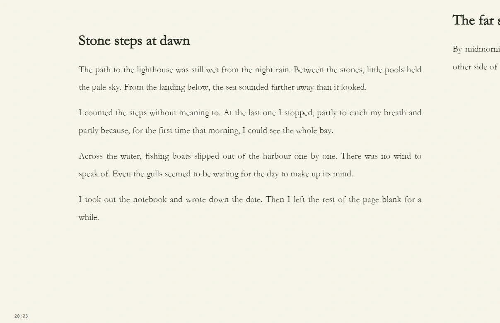

Open your books
Open EPUB, PDF, TXT, Markdown, DOCX and CBZ comics directly. Keep reading offline.
Yejian is an open-source, local-first reader for web, Windows and Android. Read EPUB, PDF, TXT and more, and sync your books and reading progress through your own WebDAV server.
Open your own books in the browser. Your library and reading progress are saved on this device.

Open EPUB, PDF, TXT, Markdown, DOCX and CBZ comics directly. Keep reading offline.
Choose a paper, soft green or night theme. Adjust font size, line spacing and text width, and read by page or continuous scrolling.
Your reading position is saved locally. Set up WebDAV to sync across devices, or export a local backup of books, covers and progress.
Android 7.0 or later. Export a library backup before migrating from a debug build to the signed release.
Get the Android APK and migration guideDesktop installer for 64-bit Windows. Choose an installer language before setup.
Get the Windows x64 installer